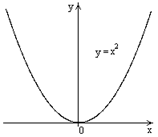
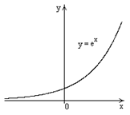
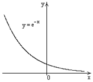
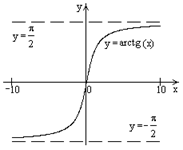
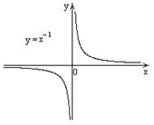

17.1.4. Горизонтальные асимптоты
Прямая  называется правой
горизонтальной асимптотой графика функции
называется правой
горизонтальной асимптотой графика функции  ,
если .
,
если .
называется правой
горизонтальной асимптотой графика функции ,
если .Прямая называется левой
горизонтальной асимптотой графика функции ,
если .
называется левой
горизонтальной асимптотой графика функции ,
если .Функция  в этом случае
представима в виде , где .
в этом случае
представима в виде , где .
в этом случае
представима в виде , где .Возможны следующие ситуации:
1) не существует ни левой, ни правой горизонтальной асимптоты
;
|

|
2) существует левая горизонтальная асимптота и не существует
правой (, ,
 – левая горизонтальная асимптота); – левая горизонтальная асимптота);
|

|
3) существует правая горизонтальная асимптота и не существует
левой (, ,
– правая горизонтальная асимптота);
|

|
4) обе горизонтальные асимптоты существуют, но не совпадают
(, ,
– левая горизонтальная асимптота; , –
правая горизонтальная асимптота);
|

|
5) обе горизонтальные асимптоты существуют и совпадают (
 , ,
– уравнение обеих горизонтальных
асимптот). , ,
– уравнение обеих горизонтальных
асимптот). |

|